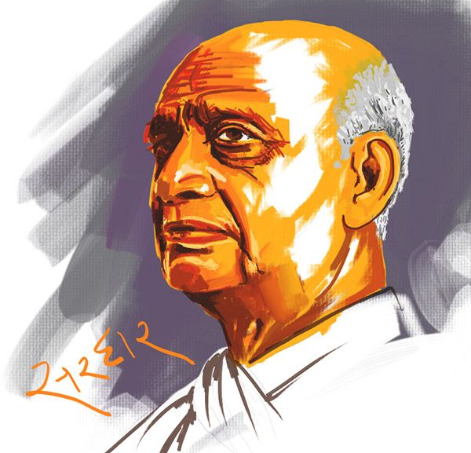

SARDAR VALLABHBHAI PATEL
first Deputy Prime Minister of India

Vallabhbhai Jhaverbhai Patel (31 October 1875 – 15 December 1950)
| Born : | Vallabhbhai Jhaverbhai Patel 31 October 1875 Nadiad, Bombay Presidency, British India (present-day Gujarat, India) |
| Died : | 15 December 1950 (aged 75) Bombay, Bombay State, India (present-day Mumbai, Maharashtra) |
| Spouse : | Jhaverben Patel (1876 - 11 January 1909) |
| Children : | Maniben Patel Dahyabhai Patel |
| Father : | Jhaverbhai Patel (1829-1923) |
| Profession : | Barrister, Politician, Activist, Freedom Fighter |
| Award : | Bharat Ratna(1991) |
- Vallabhbhai Jhaverbhai Patel (31 October 1875 – 15 December 1950), popularly known as Sardar Patel, was an Indian politician.
- He served as the first Deputy Prime Minister of India. He was an Indian barrister, a senior leader of the Indian National Congress and a founding father of the Republic of India
- He played a leading role in the country's struggle for independence and guided its integration into a united, independent nation. In India and elsewhere
- he was often called Sardar, meaning "chief" in Hindi, Urdu, and Persian. He acted as Home Minister during the political integration of India and the Indo-Pakistani War of 1947.
- Patel was born in Nadiad and raised in the countryside of the state of Gujarat. He was a successful lawyer.
- He subsequently organised peasants from Kheda, Borsad, and Bardoli in Gujarat in non-violent civil disobedience against the British Raj, becoming one of the most influential leaders in Gujarat.
- He was appointed as the 49th President of Indian National Congress, organising the party for elections in 1934 and 1937 while promoting the Quit India Movement.
- As the first Home Minister and Deputy Prime Minister of India, Patel organised relief efforts for refugees fleeing to Punjab and Delhi from Pakistan and worked to restore peace.
- He led the task of forging a united India, successfully integrating into the newly independent nation those British colonial provinces that had been "allocated" to India. Besides those provinces that had been under direct British rule, approximately 565 self-governing princely states had been released from British suzerainty by the Indian Independence Act of 1947. Patel persuaded almost every princely state to accede to India.
- His commitment to national integration in the newly independent country was total and uncompromising, earning him the sobriquet "Iron Man of India".
- He is also remembered as the "patron saint of India's civil servants" for having established the modern all-India services system.
- He is also called the "Unifier of India". The Statue of Unity, the world's tallest statue, was dedicated to him on 31 October 2018 which is approximately 182 metres in height.